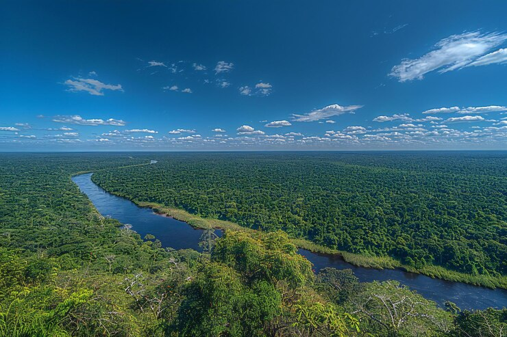

Pantanal

Uma das maiores regiões úmidas do mundo, ideal para observação de vida selvagem.
Pontos Turísticos
- Transpantaneira
- Parque Nacional do Pantanal Matogrossense
- Refúgio Ecológico Caiman
Cuidados a Serem Tomados
- Utilize repelente contra insetos.
- Evite perturbar a fauna local.